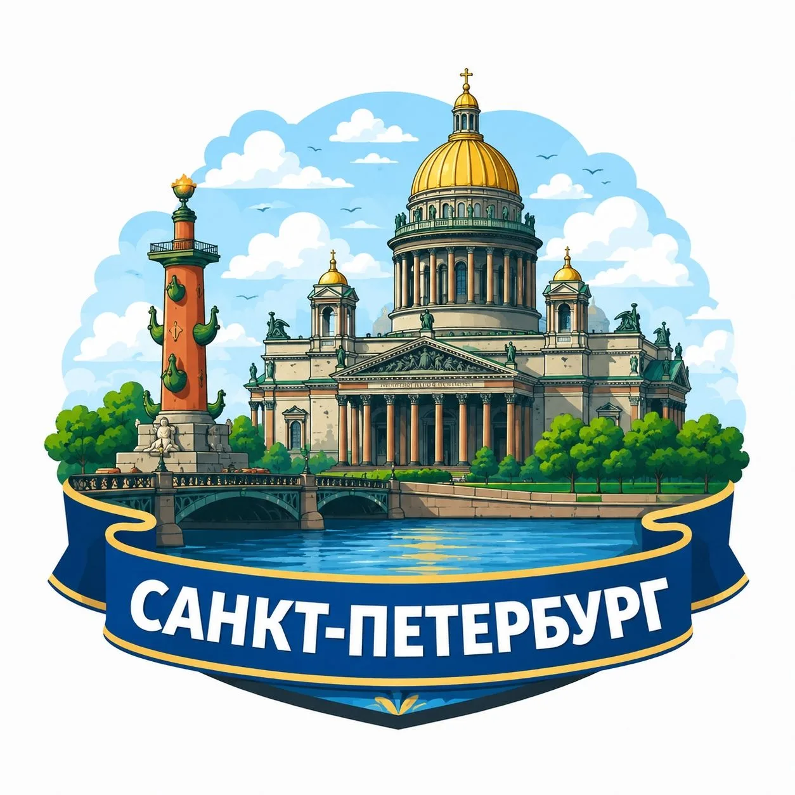
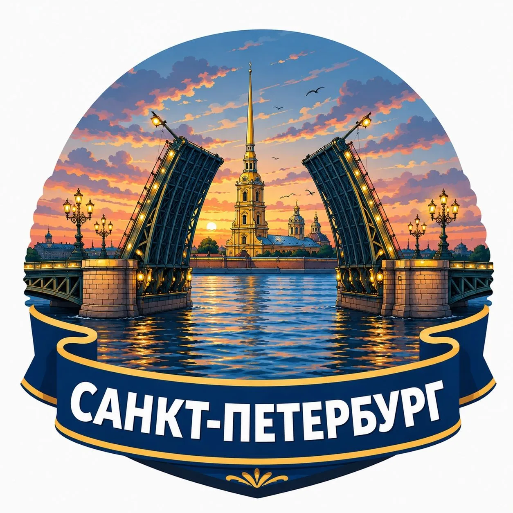
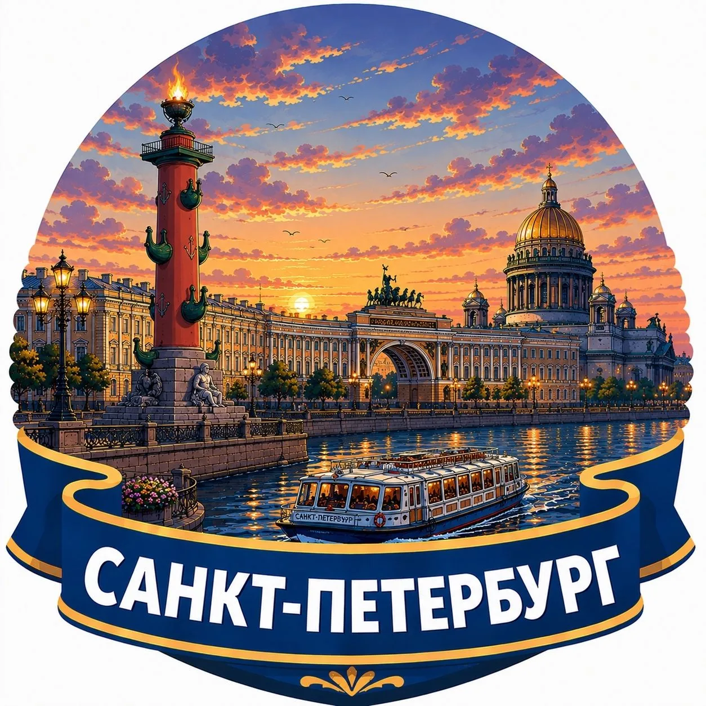

Атмосферный Санкт-Петербург
Прошлое и настоящее одного из самых красивых городов мира.

Интересный Петербург
Факты, истории, легенды и любопытные места.

Петербург сегодня
Новости, события и всё важное, что происходит в городе.

Куда сходить в Петербурге
Лучшие маршруты, музеи, рестораны и развлечения.